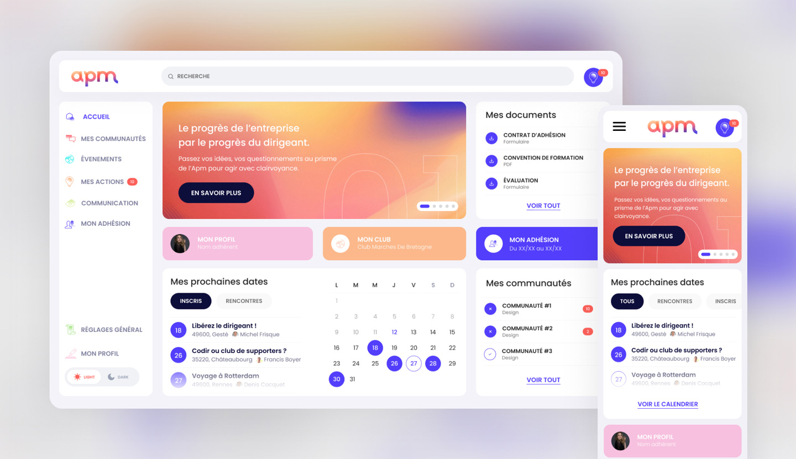
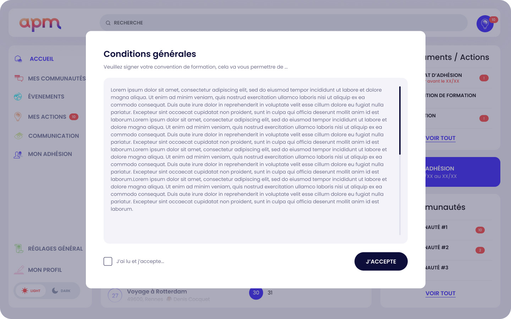
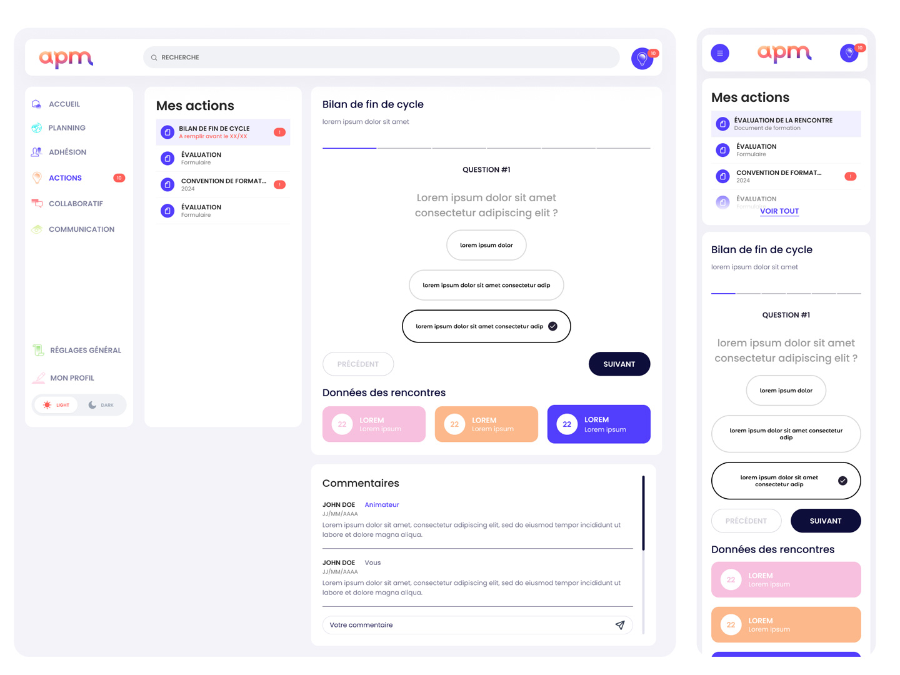
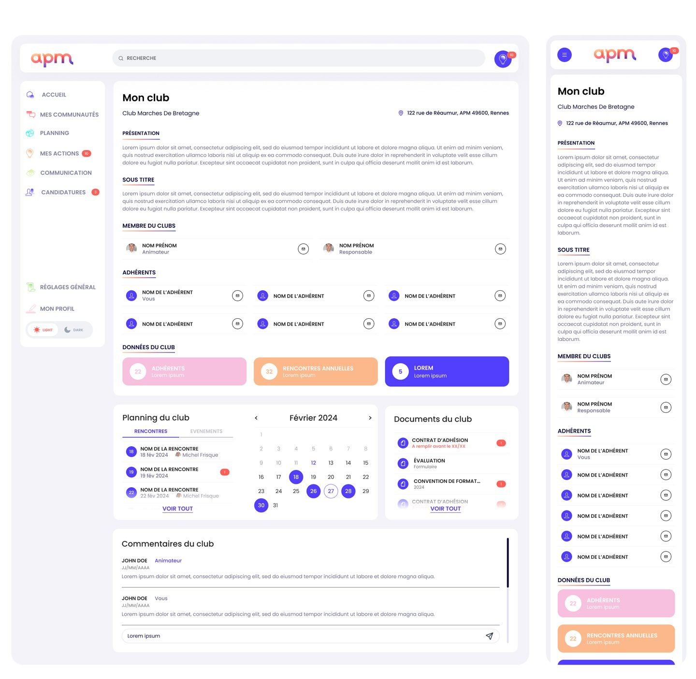

Une fois le membre intégré, la plateforme devient son outil d'engagement quotidien. L'interface devait s'adapter dynamiquement aux droits et besoins de chaque acteur.
Système de Widgets modulaires
Conception d'interfaces sous forme de tableaux de bord personnalisés (Role-Based Access Control). Un adhérent visualise son agenda et ses communautés de manière épurée, tandis qu'un animateur accède à des vues denses orientées pilotage (indicateurs clés, facturation, suivi CRM des présences).
Navigation & Wayfinding
Utilisation d'une structure de navigation latérale stricte couplée à un système de cartes (Bento UI) pour maximiser la lisibilité des actions requises (ex : "Feuille d'émargement à signer").
Design System
Rationalisation de l'interface via un Design System complet (livré sous Figma), intégrant nativement la gestion des thèmes (Light/Dark mode) et anticipant la scalabilité des composants (tables de données, listes, modales). Une déclinaison mobile a été explorée (lancement, onboarding, connexion, accueil) et des pistes d'accessibilité envisagées : agrandissement des textes et renforcement du contraste.




